How to mark cells in Ani
Follow these steps in order. The practice picture is the yellow microscopy slide used in every figure below.
C:\Users\80100173\Ani-v0.4.0\Ani\sop\demo.jpg
1. Open Ani and this picture
- Double-click run_ani.bat in the Ani folder. If Ani is already open, use that window.
- On the right-hand panel, click Open image.
- Choose demo.jpg from the path above. You can also drop the file onto the window.
You see the whole slide, and the file name at the top of the panel.
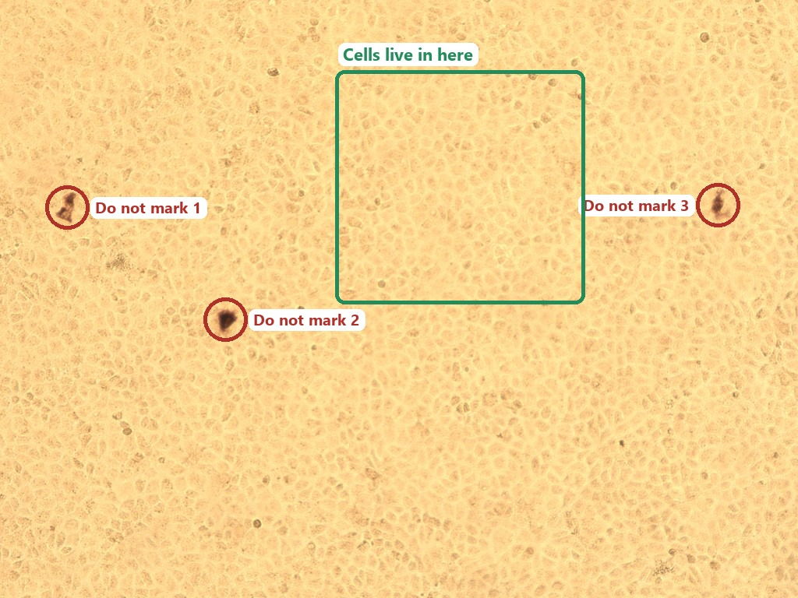
2. Learn the panel before you draw
Everything you click is on the Ani panel at the right. The picture matches the buttons in the program.
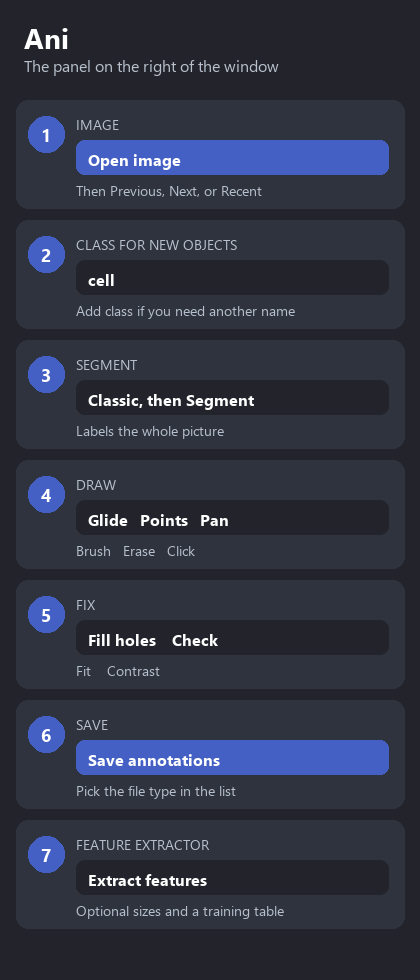
- Open image loads the slide. Previous and Next move through other pictures in the same folder.
- Class is the name new outlines will receive. It starts as cell. Click Add class for names such as healthy, dead, or infected.
- Segment asks the computer to outline the whole picture. Leave the menu on Classic unless someone has installed Cellpose.
- Glide, Points, Pan, Brush, Erase, Click are how you draw and move.
- Check tells you if an outline has a hole or is only a speck.
- Save annotations writes the work to disk.
- Extract features is optional. Use it after the classes are finished.
3. Mark cells. Skip the dark clumps.
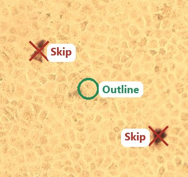
On this slide the cells are the pale cobblestone shapes. The black-brown clumps are dirt or stain, not cells.
Do outline one pale cell at a time.
Do not outline a dark clump, and do not outline several cells as one shape.
4. Move around the slide
- Click Pan, or stay on Glide.
- Drag with the left mouse button to move the picture.
- Roll the wheel to zoom in until one cell fills a good part of the view.
- Click Fit when you want the whole slide back.
- Click Contrast if the picture looks flat.
5. Draw one cell with Glide
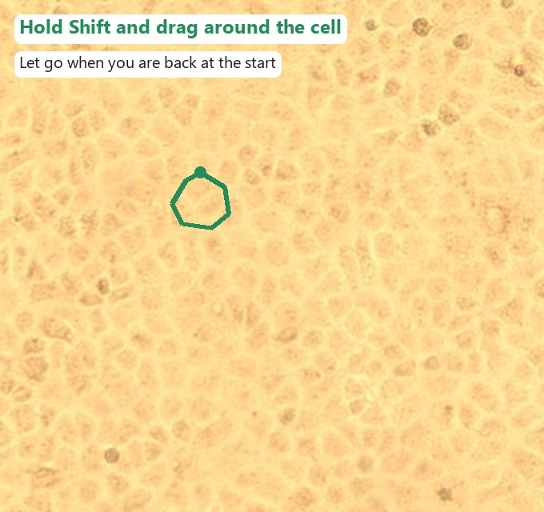
- Click Glide.
- Hold the Shift key.
- Press the left button on the edge of one cell and drag all the way around it.
- Release the button when you are back near where you started.
You get one closed outline. If the line jumped across a gap, press Ctrl+Z and trace it again more slowly.
6. Or place corners with Ctrl+click
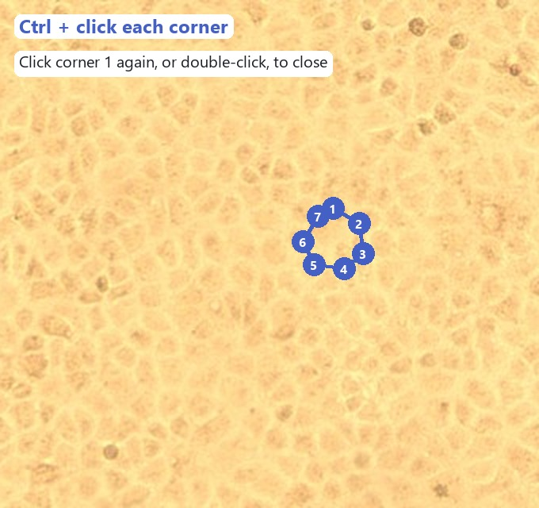
- Click Glide or Points.
- Hold Ctrl and left-click each corner of the cell, in order.
- Click the first corner again, or double-click, to close the shape.
- While the corners are still open, right-click removes the last corner. Esc cancels the shape.
7. Auto segment the whole slide
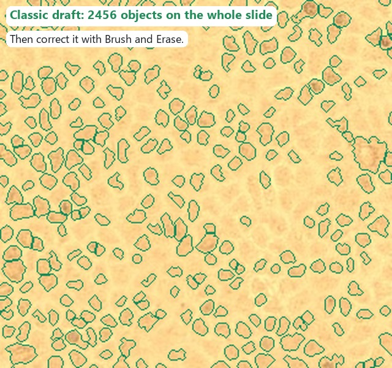
This is the automatic segmenter. It proposes outlines. You still decide which ones are real cells.
- In the Segment menu, choose the method.
- Classic is always there. It needs no extra install and works offline. On this slide it finds about 2,450 pieces, including many that are only part of a cell.
- Cellpose cells and Cellpose nuclei appear in the same menu only after Cellpose has been installed with install_ai.bat. They are slower and aimed at microscopy cells. If you do not see them, Classic is the one to use.
- Click Segment. The window stays usable while it runs. The bottom line says “Segmenting the image…”
- If the slide already has outlines, Ani asks “Replace outlines?” Click Yes only when the old work should be replaced. Ctrl+Z brings it back. That replacement is one undo step.
You get a line such as “Found 2456 objects. Correct them with the brush.” Every new outline receives the class that is selected in the list, usually cell.
Then zoom in, erase dark clumps and specks, and join or redraw cells that were split badly. Do not save the draft as finished work.
8. Auto segment one object with Click
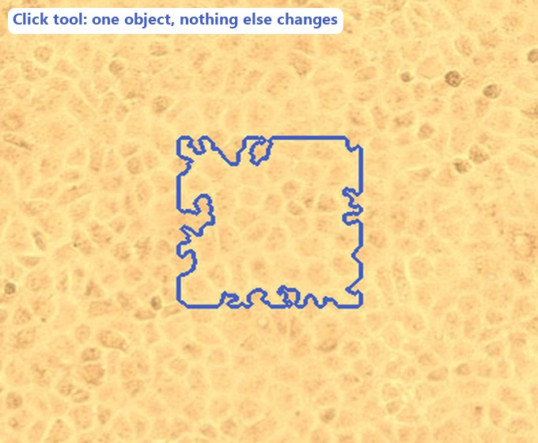
- Click Click, or press C.
- Left-click the middle of one cell that has no outline yet.
- Use the same Segment menu. Classic, or Cellpose if it is installed, finds only that object.
You get one new outline. Outlines already on the slide stay as they are. A click on an existing outline does nothing to it. The bottom line says to correct it with the brush.
9. Brush, erase, holes, and the check
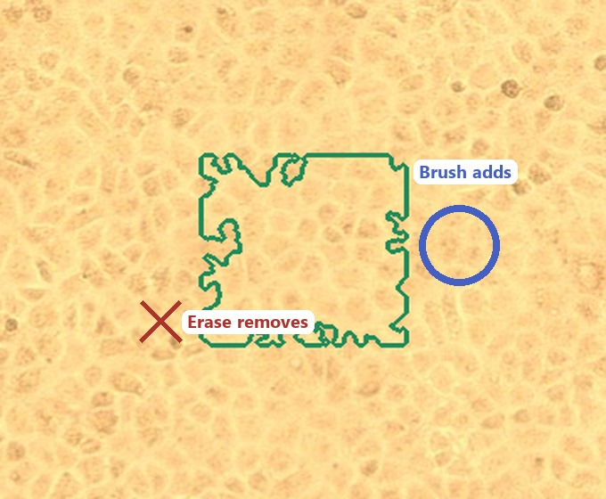
- Click Brush, or press B. Drag to add pixels. Start the drag on the cell you want to extend. A drag that starts on empty space begins a new object.
- Move the Brush slider. It runs from 2 px to 40 px. Start at 8 px. Zoom in before using a thin brush.
- Click Erase, or press E, and drag across a mistake. Use this on any outline that landed on a dark clump.
- While Brush, Erase, or Click is selected, the left button draws. Click Pan when you need to move the slide.
- Move Fill if the colour hides the cell. 55% lets the picture show through. 100% is a solid colour.
- Click Fill holes, or press F, when a gap is trapped inside an outline. Gaps that touch the edge of the picture are left alone.
- Click Check. The bottom line reports holes, cells cut by the edge, specks under 8 pixels, and outlines with no class.
- Press Delete or Backspace with the pointer over a bad outline to remove that whole object.
- Right-click an outline and choose Delete cell for the same result. Choose New class… in that menu when the name you need is not in the list yet.
10. Name each cell
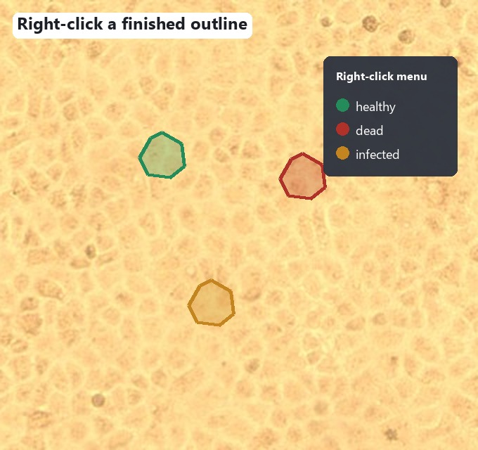
- Click Add class and type the names you were asked to use. For this practice, add healthy, dead, and infected.
- Right-click an outline.
- Click the class name in the menu.
- The colour of that outline changes. The count under the tools shows how many cells have each name.
The class selected in the list is used for the next outline you draw, including everything the auto segmenter adds. Right-click is how you change one that is already drawn.
- Press 1 to 9 to pick a class in the list without using the mouse.
- Press [ and ] to move to the previous or next class.
The count under the tools updates as you go, for example “12 cells · 8 healthy, 3 dead, 1 infected”. It also warns about holes and tiny specks.
11. Save
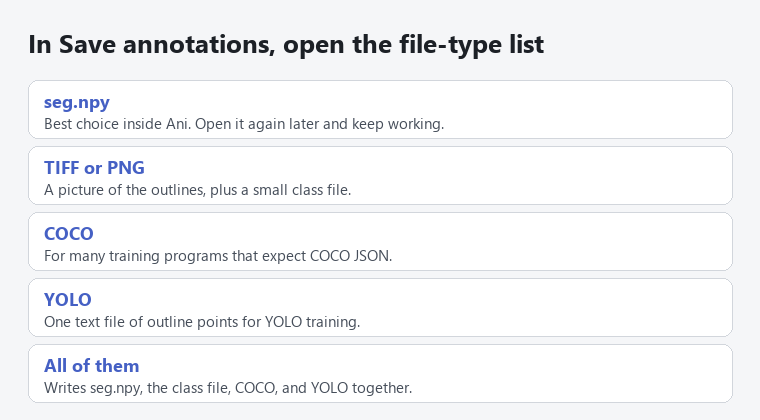
- Click Save annotations, or press Ctrl+S.
- At the bottom of the save window, open the file-type list.
- For work you will reopen in Ani, choose seg.npy.
- Choose All of them when a training program also needs COCO or YOLO.
You get a line that says the files were saved. Open the same image later and Ani loads demo_seg.npy beside it.
12. Undo, and what happens if Ani closes
- Undo and Redo sit under the cell count. Ctrl+Z undoes the last outline, brush stroke, class change, or segmentation. Ctrl+Shift+Z puts it back.
- One Segment click, one Click, and one brush drag are each a single undo step.
- If the power fails or the window is closed while work is unsaved, open the same picture again. Ani restores the outlines and says they came from the last session. Save them, or discard them when Ani asks.
13. Make the training table
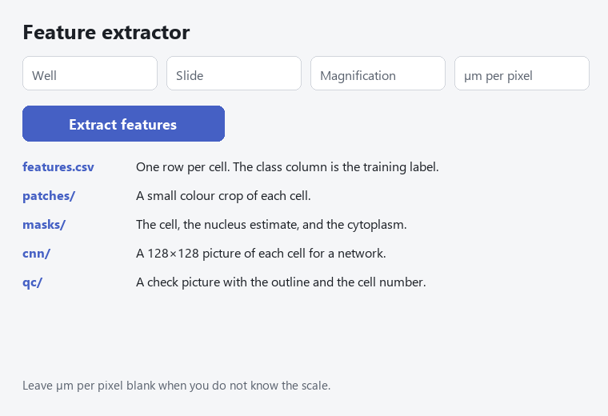
- Finish the outlines and the classes first. The table uses the outlines you kept, not a new segmentation.
- Type Well, Slide, and Magnification when you were given them. They are stored with every cell.
- Type µm per pixel only when you know the camera scale. Area and lengths are then also saved in micrometres. Leave it blank if you do not know it.
- Click Extract features and choose a folder. The bottom line counts “Measuring cell 1 of N…”
You get a folder named demo_features. Open features.csv for one row per cell. The class column is the training label. patches holds a crop of each cell, masks holds the cell, nucleus estimate, and cytoplasm, cnn holds a 128×128 picture, and qc is a picture you can look at to see that the outlines landed on the right cells.
14. Move through a folder of slides
- Put every slide in one folder, then open the first with Open image. You can also drop a picture onto the window.
- Previous and Next step through that folder. Ani asks before it leaves unsaved outlines.
- Recent lists pictures opened on this computer.
- The file name line shows the size and how many slides already have a saved file, such as “demo.jpg · 1024×768 · 2 of 10 saved”.
- Fit shows the whole slide. Contrast resets the brightness from the pixels. The wheel zooms. Left-drag moves the slide when Pan, Glide, or Points is selected.
15. The other Ani window
The window this guide describes is the one that opens from run_ani.bat. It is the one operators should use.
A second, older window opens only if someone starts Ani with python -m ani --full. That window has four tabs:
- Annotate reviews a project of many images and can correct a detector’s outlines.
- AI runs Cellpose, micro-sam, or a YOLO model when those packages are installed.
- Train scores outlines and tunes the Classic segmenter.
- Settings holds project options.
Day-to-day marking, Classic auto segment, Click, classes, save, and the feature table are all in the main window. You do not need the four-tab window for this practice slide.
Keys
| Key | Action |
|---|---|
| Ctrl+O | Open a picture |
| Ctrl+S | Save |
| Ctrl+Z | Undo |
| Ctrl+Shift+Z | Redo |
| G | Glide |
| P | Points |
| B | Brush |
| E | Erase |
| C | Click one object |
| Z | Pan |
| F | Fill holes |
| 1 to 9 | Pick a class in the list |
| [ and ] | Previous or next class |
| Delete | Remove the outline under the pointer |
| Esc | Cancel the outline you are drawing |
If something looks wrong
| What you see | What to do |
|---|---|
| The outline crossed empty space | Ctrl+Z, zoom in, and trace the edge again |
| A dark clump was outlined | Click Erase, or press Delete over that outline |
| Two cells became one shape | Erase the bridge between them, then close each cell |
| Segment marked thousands of pieces | That is the Classic draft on this crowded slide. Erase specks, or Ctrl+Z and use Click on the cells you need |
| Cellpose is not in the menu | Use Classic. Cellpose appears only after install_ai.bat |
| The bottom line says a segmentation is already running | Wait until it finishes. Do not start a second one |
| The picture will not drag | Click Pan. Brush, Erase, and Click use the left button for drawing |
| Ani says it is already open | Use the window that is already on the screen |